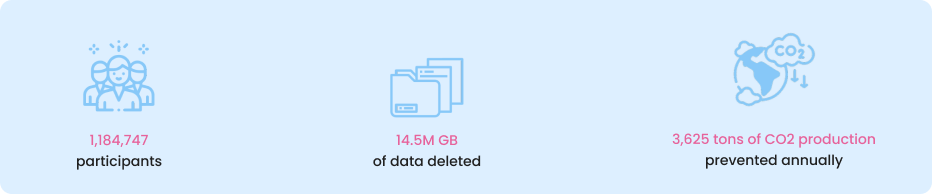

The Digital Cleanup Day is a global initiative aimed at raising awareness about the environmental impact of digital waste. Our mission is to inspire individuals and organizations to take action by decluttering their digital spaces and reducing their carbon footprint. By working together, we can make a positive impact on the planet and contribute to a cleaner, more sustainable future.
Every file, email, or unused app stored on digital devices consumes energy and contributes to CO2 emissions.
Participating in the Digital Cleanup Day is an opportunity to reduce digital waste, optimize your devices, and help combat climate change. Together, small actions can lead to big changes. Join us to make a difference!
Review and delete unnecessary files, emails, and photos on your devices. Unsubscribe from unwanted newsletters and clean up your social media accounts. Encourage friends and family to join the movement! Use fewer emails, minimize unnecessary backups, and reduce online content creation.
Addressing your digital footprint reduces environmental impact and improves workflow. Streamlined systems enhance efficiency, reduce costs, and boost team morale. Participating in Digital Cleanup Day is a fun, free, and impactful team-building activity that raises awareness and fosters sustainability.
The 2024 Digital Cleanup Day saw participation exceed one million registrants globally.
The Digital Cleanup Day 2025 introduces the 'Digital Cleanup Art' challenge
The upcoming Digital Cleanup Day is scheduled for March 10 to 15, 2025.